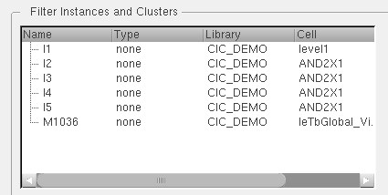

Creating Clusters
Clusters provide a grouping mechanism for placement control interpreted and used by floor planning and placement tools. They are identified by a unique name. Clusters are not graphical objects.
Clusters are used to associate instances and cluster boundaries. They can own area and layer blockages. Each instance can belong to only one cluster, but a cluster can have any number of cluster boundaries. Cluster boundaries are used to indicate the collective area into which you can place the contents of a specific cluster of instances.
Clusters can be hierarchical, so that you can associate clusters with other clusters. Clusters can also own blockages. You define each cluster as one of the following types:
- Inclusive: Specifies that instances other than instances in this cluster may be placed in its associated cluster boundaries.
- Exclusive: Specifies that only instances in this cluster may be placed in its associated cluster boundaries.
- Suggested: Specifies that instances in this cluster may be placed outside of its associated cluster boundaries.
-
In the layout window, choose Create – P&R Objects – Clusters.
The Create and Edit Clusters form appears. -
In the Filter Instances and Clusters section, set the filtering criteria and click Filter By.
The filtered objects are listed in the section. -
Select the instances, clusters, and sub clusters to add new or existing clusters in the current cluster editing area of the form.
 -
Click Add to Cluster to move the instances or clusters you have selected in Filter Instances and Clusters to the current cluster editing area of the form.
The selected instances and clusters are added to the trunk. Or, if you select the branch in the current cluster editing area, the instances and clusters are added to the correct branch. The following figure shows the current cluster editing area listing the clusters defined in the cellview in the tree table format. Use the scroll bar to display the view names.
-
Create new and edit existing clusters and sub clusters using the Create, Create Sub Cluster, Flatten and other options in the form. Because you cannot select clusters, you can use the options to edit the properties of clusters and to delete them.
The newly created cluster is also added to the Clusters list, and the current cluster editing area displays the newly created cluster.
Related Topics
Return to top